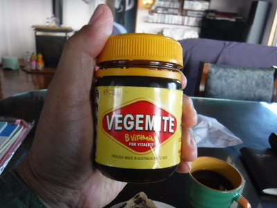
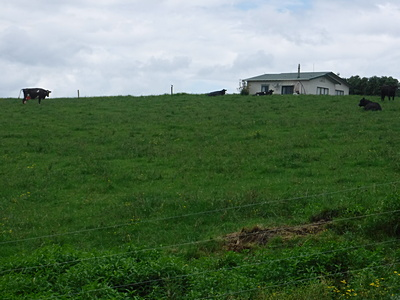
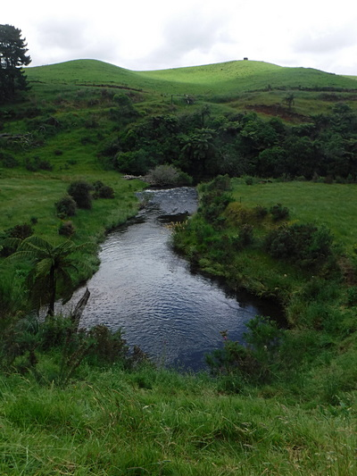
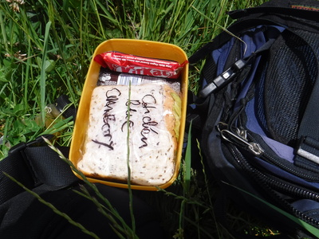
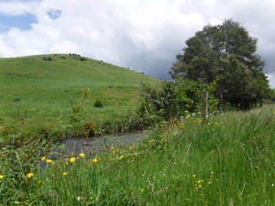
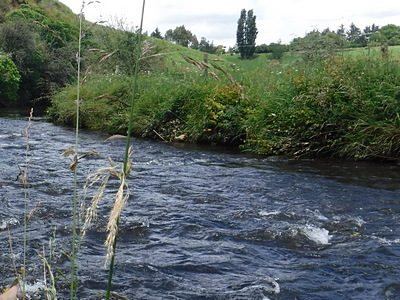

釣行日誌 ＮＺ編 「一期一会の旅：A Sentimental Journey」
南麓の山岳渓流にて
12/02(SUN)-1
今朝は天気が良くなかったので、７時半まで朝寝をした。起き出して朝食を頂き、洗濯や日本へのお土産の発送などを済ませてから南麓の山岳渓流へ行くこととした。
食パンを焼いて、バターとベジマイトを塗り、コーヒーにていただく。

ベジマイトはニュージーランドやオーストラリアでは、国民食と言って良いくらいの人気ある食べ物なのだが、日本人には苦手な人が多いようだ。僕は留学生時代に行った研究で、ホワイトベイトを金網籠のワナで捕らえる時に、この調味料を餌にしていたので、それ以来馴染んでしまい、すっかり大好物になってしまったのだ。あっという間にトースト４枚を平らげた。それから皆さんからいただいたプレゼントや自分で買い込んだお土産を、先日ショッピングモール内の郵便局にて買っておいた段ボール箱に積め、田島さんにガムテープをお借りして梱包する。いささか華奢な箱だったので、テープでグルグル巻きにした。それと釣り具一式を積み込んで、車で町に出かける。いつも通り、ジュースを小瓶３本に小分けして持った。
田島家から１番近いショッピングモールに行き、段ボール箱の小包を発送するつもりが、今日は日曜日でポストショップがお休みだった。残念。それから隣のサブウェイで、サンドイッチ３個を買い込み、南麓の山岳渓流へと車を向ける。
雲は多いが、朝よりは明るくなってきた。国道をそれて地方道に入り、昔入渓したことのあるカーブの下から入ろうかと思って車を停めてみると、ここにもゲートに「関係者以外立ち入り禁止」の大きな看板が。こりゃ別を当たろうと、丘の上の農家目指して未舗装のドライブウェイをゆっくり上がって行く。

駐車場に停めて、玄関をノックすると、中からテレビの音はするが、誰の声もしない。２度、３度とノックして、大声で
「こんにちは～！ 誰かいますか？」
と呼び続けていると、
「うぉ～い....」
と返事が有り、眠そうな顔で若い男の人が出てきた。
「こんにちは！ すみませんが、この下の川で釣りたいので、牧場を通り抜けて良いでしょうか？」
と訊ねると、
「ああ、いいよいいよ。返事が遅くて悪かったな。ちょっと昼寝をしていたんだ。」
「そりゃすみませんでしたねぇ。で、車はどこに停めれば良いでしょう？」
「あそこの農道の入り口が広いから、なるべく脇に停めておいて。」
「ありがとうございました。これは、ささやかではありますが、お土産のフジヤマの絵葉書です。」
「おお、これはありがとう。」
「ところで、この下を流れる川の名前は、いったい何と読むのですか？」
「うーん、オレも知らねぇなぁ....」
マオリ語の地名は、発音が難しいのである。（笑）
昔、２度ほど来たことのあるミルク絞りの作業小屋の脇を通り抜け、坂道を下って谷へと降りて行く。少々風はあるが、まずまずの釣り日和となった。上から見ると、大きな淵有り荒瀬有りで、魅力的な渓相である。

あれは確か、2001年の12月25日だったと思うが、下の区間のカーブから釣り始めた時に、１人の若い青年と出くわしたことがあった。名前は忘れてしまったが、彼はハミルトン市内の釣具店に勤めており、毎年クリスマスの日にはフライフィッシングを楽しみにこの川を訪れるとのことだった。小さな川で、はち合わせしてしまったので、よろしければ一緒に釣り上がっても良いですかと訊ねると、OK！と快諾してくれたので、その日は一緒に釣りを楽しんだ。流石に彼の腕は見事で、何度もロッドが大きく曲がっていた。僕はドライフライの下にドロッパーニンフというニュージーランド式リグで釣ったのだが、２度ほどドライに出た大物を掛け損ねた思い出がある。それゆえ、この川の魚影の濃さと大物が居ることは確実なはずである。あれから変化が無ければ、の話だが。あの彼も、今はどこでどうしているだろうか？
橋から見下ろすと、川の水も澄んでいる。その小さな木橋を渡り、100メートルほど下流に歩いてから腹ごしらえをする。ちょうど午後１時過ぎだった。

ジュースの小分け用ジョウゴとともに日本から持参したタッパーウェアが活躍し、ウェストバッグの中でサンドイッチが潰れるのを防いでくれた。

大ぶりなサンドイッチを瞬く間に平らげ、心はやりながらティペットにフライを結ぶ。今日もロイヤルウルフの12番を選ぶ。ところがオバカなことに、ラインとリーダーをロッドのガイドに通す前にフライを結んでしまったため、いちいち１つずつガイドにフライを通してゆく羽目となる。ううむ。焦りすぎているなぁ。
流れに立ち込んで水温を測ってみると13度。鱒釣りには適当な値である。しかしウェットウェーディングにはかなり冷たい。

ランチの場所から降りて、すぐ対岸に緩い流れのレーンが見えたので、そこに振り込んでみる。２度、３度と流してみるが反応は無い。少し歩み下って、見えていた大淵のアタマを探る。この川も底が滑りやすく、気を抜くとすぐにコケそうになる。
実に気配のある淵であったが、上流から近づいたアプローチが拙かったのか、流れ込みでも真ん中でも淵尻でも、とんと魚は出てこない。あきらめて上流へと遡行を始める。
釣行日誌ＮＺ編 目次へ
サイトマップ
ホームへ
お問い合わせ